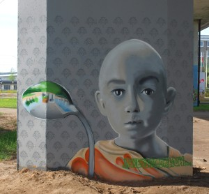
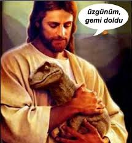

nefes, petrol ve dinozor
Bir garip zamanlardan geçiyoruz prenses. Bir taraftan saçmalıkların diz boyunu geçtiği, akla sığmaz cümlelerin açıklama olarak kabul edildiği bir kaos bir taraftan kutu içinde kutu, çark içinde çark, sessizce süre giden koca bir sistem. Üst üste inşa edilmiş yapılar, birbirlerini besleyerek yollarına devam ediyorlar. Bazen biri, bazen diğeri can sıkıcı oluyor. Var gücümüzle başlıyoruz düzeltmeye. Bazen çarka çomak sokup, söküp atıyoruz yerinden, bazen biraz yağlıyoruz, gıcırdamasın diye. Koca bir makinanın bir önünde bir arkasında, bir altında bir üstünde sürüp gidiyor mücadelemiz.
Halbuki daha ilkokulda öğrenmedik mi bu çarkların birbirleriyle nasıl bağlantıda olduklarını. O zaman kimimiz derinlemesine, çoğumuz şöyle üstünden bir tur atarak öğrendik konuyu. Ama öyle ya da böyle ekosistemin önemi, mükemmel çalışma mekanizması, hassas dengeleri kafamızda yerini aldı… ya da alamadı. Neyse, sonuçta en azından ortada bir sistem olduğunu ve varlıkların bir şekilde bu sistemin bir ucundan tuttuğunu biliyoruz. Eski bilgileri bir hatırla. Bir canlı ölür, bazen büyük yırtıcılar tarafından, bazen topraktaki küçük canlılar tarafından parçalanır. Sonra bakteriler devreye girer, oradan elde edilen kaynaklarla beslenirler. Toprak zenginleşir. Bitkiler büyür. Ağaçlar yağmur getirir. Yağmur, bitkileri büyütür. Hayvanlar onları yer, birbirlerini yer, gübre olur, ölür, çürür, dönüşür ve bu böyle devam eder ya hani… Hah hatırladın işte. Sen bu sistemden bir halkayı çıkarırsan komple hepsinin kafası karışır. Arılar, börtü böcek olmazsa, çoğu bitki döllenemez, aç kalırız ondan sonra.
Hepsi birbirine birçok yönden bağlı, kusursuzca dengelenmiş bir sistemden söz ediyoruz. En ufağından, en irisine kadar herkesin bir yeri anlamı var bu mekanizmanın içinde. Peki şimdi sana soruyorum Prenses; bu sistemin içinde senin yani insanoğlunun görevi nedir? En primitif anlamda, basitçe cevap ver bana. İnsanoğlu dünya üzerinde ne işe yarar? Arıların yaptığı gibi bitkilerin döllenmesini sağlamadığımız ya da tarlalardaki yılanlar gibi kemirgen sayısını dengede tutmadığımız kesin. Nedir peki bizim olayımız?
Herhalde tarih boyunca sayısız filozof ve bilim insanı bu soruya cevap aramıştır. Kütüphaneleri dolduran kitaplar, kara tahtalara sığmayan formüller yazılmıştır. Tüm bunlara rağmen bazen insanoğlu sistemin, yalnızca kendisi için, beslenmesi, ihtiyaçlarını gidermesi için var olduğunu düşünmeyi tercih eder. Bu noktada daha fazla sorgulamaya gerek kalmaz zaten. Böylece tüm evrene hükmetmesi gereken ama bunu bir türlü beceremediği için hayat boyu mutsuzluğa mahkum insan ortaya çıkmış olur. Buyur çağımızın hastalıklarından biri daha!
Matrix filmini çoğumuz izlemişizdir sanırım. Filmdeki gerçek dünyada, insanlar ana rahmine benzer sıvı ile dolu bir tüpün içinde üretilirler. Bedenlerine bağlı kablolar vardır. Zihinlerinde ise makinelerin yarattığı sanal alem dönmektedir. Orada gerçek bir hayat yaşadıklarını sanırlar. Okula giderler, mezun olurlar, iş bulurlar, evlenirler, aile olurlar, seçmen olurlar, oy kullanırlar. Üzülürler sevinirler, aşık olurlar, depresyona girerler çıkarlar vesaire. Tüm bu duygu değişimlerini aslında fanusun içinde yaşarlarken, bedenleri enerji üretir ve o enerjiyle makineler beslenirler. Orada hareketsiz yatarken ve kafalarının içinde süregiden dünyayı yaşarken, gerçekte yaptıkları yalnızca iki şey vardır aslında: nefes almak, nefes vermek…
Bu alemde, bunun teknik karşılığı ise yalnızca ve yalnızca oksijeni karbondioksite çevirmekten başka birşey değil. İşte bizim ekosisteme faydamız. Gerçek benliğimize yüklenmiş yegane misyon. Geri kalan her şey, değer verdiğimiz, uğruna mücadele ettiğimiz, üzüldüğümüz, sevindiğimiz her şey ise yalnızca bu misyonumuzu sürdürebilmek için ihtiyaç duyduğumuz bir hayal aleminden başka bir şey olmasa gerek.
Bir süper kahramana gönül vermiş küçük bir çocuğun, gerçeği anladığındaki hayal kırıklığı gibi, değil mi? Birinin çıkıp da onca emekle inşa ettiğin hayatın, objelere, düşüncelere, sistemlere ve hatta kendine verdiğin değerin, sadece farkında olmadığın asıl görevini yerine getirmeni sağlayan bir kurgu olduğunu söylemesi can sıkıcı. Ama üzülme! Her ne kadar küçük bir karıncanın sistemdeki görevinden daha değerli olmasa da misyonumuz, burada bitmiyor bence.
Yine bir eski bilgiye bel bağlıyorum. Evrende varolan hiç bir enerji yokedilemez, ama dönüşür. Bu anlamda tüm varlıklar aslında birer geçici süreçtirler ki sonunda başka bir şeye dönüşerek yaşamın devamını sağlasınlar. Mesela yeryüzünde hakimiyetleri asırlarca sürmüş, kocaman ve yenilmez dinozorların birden yok olması ve onlara başka yok olan/dönüşen şeylerin eklenmesi ve üstünden binlerce yılın geçmesiyle petrol oluşmamış mı? Peki sonra o petrol çıkarılınca, bizim şu an sahip olduğumuz çoğu şeye dönüşüp, şu an içinde yaşadığımız düzenin bel kemiğini oluşturmamış mı? Buraya kadar tamamsa petrolün aynı zamanda küresel ısınma ve savaşlara dönüşerek, kendi kurduğu düzeni sona erdirecek araç olduğunu da anlamışızdır sanırım. Dinozorlar petrole, petrol insanlığın muhteşem yükselişine ve insanlığın sonuna… Gayet basit. Peki ya sonra? Kralın binayı terkedişine yaklaşıyoruz sanki. İnsanlığın muhteşem finali nasıl bir yaşamın tohumu olacak? Dinozorlar kadar büyük ve güçlü olmalıyız ki arkamızdan evren, devam filmini çekip başka şekilde yoluna devam etsin. Efsanevi bir son için, dünyanın her köşesinde çalışıyoruz durmaksızın.
Üzülmeye gerek yok. Her ne kadar üstüne olmadık değerler biçtiğimiz herşeyimiz geçicilikten başka bir şey olmasa da daha geniş bir perspektiften bakınca, her varoluş kadar değerliler aslında. Hiç dert etmeden dört nala sonumuza koşarken, tadını çıkarabiliriz. Kurmaya, yapmaya, kazanmaya, biriktirmeye devam edebilir ya da bazen aramızdan bazılarının yaptığı gibi mağaraya, tapınağa çekilip, sadece bağdaş kurup nefes alıp vererek, huzur ve mutluluk dolu bir ömür yaşayabiliriz. Belki de tapınağımızı başka şekilde buluruz ve gerçekliğin farkındalığıyla yaşamaya devam ederiz. Suyun içinde açıp, ıslanmayan nilüferler gibi…
“Bir nefes giriyor bir nefes çıkıyor. Biz aradaki kapıyız yalnızca. Bir gün kapı ardına kadar açılacak iki gibi gözüken her şey yine tek olacak.”


{kind=link}
{kind=link}
Bu bir rüya.. Çok da uzun değil aslında, iki vakit arası kadar..
Daha geniş bir perspektiften bakınca; iki nefes arası trajikomik yaşamak bizimkisi…
hazır yeri gelmişken arıların aslında hayatımızda neden bunca önemli olduklarını anlatan şu ted konuşmasını izlemekte de fayda var derim. türkçe altyazısı da mevcut:
http://www.ted.com/talks/marla_spivak_why_bees_are_disappearing?utm_campaign=&utm_content=awesm-publisher&utm_medium=on.ted.com-facebook-share&utm_source=direct-on.ted.com&awesm=on.ted.com_c092f#